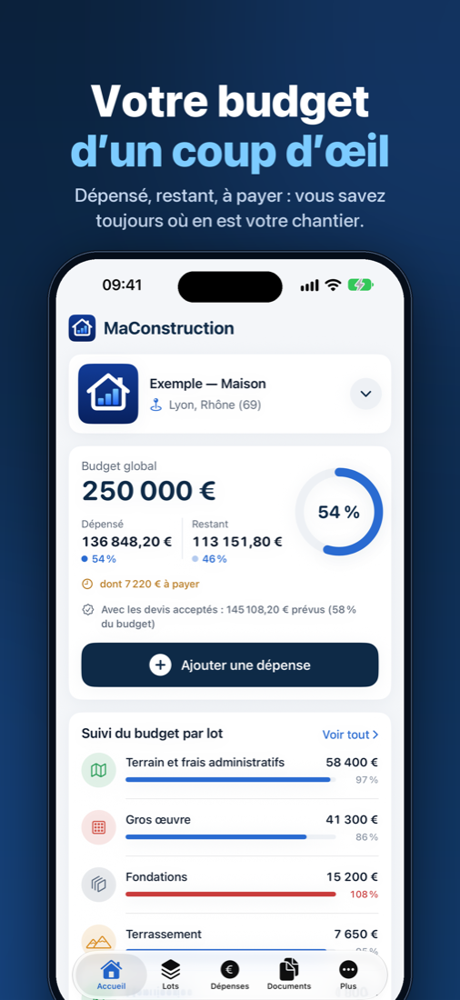

Le budget de votre chantier, d’un coup d’œil
Vous faites construire ou rénover ? MaConstruction suit vos dépenses, vos factures et vos devis, lot par lot. Gratuit, sans compte : vos données restent sur votre téléphone et dans votre iCloud ou votre compte Google.
- Ajoutez une dépense en quelques secondes, avec la photo de la facture.
- Un budget par lot de travaux : les dépassements sautent aux yeux.
- Comparez vos devis et voyez leur effet sur votre budget.
Bientôt sur l’App Store et Google Play.
